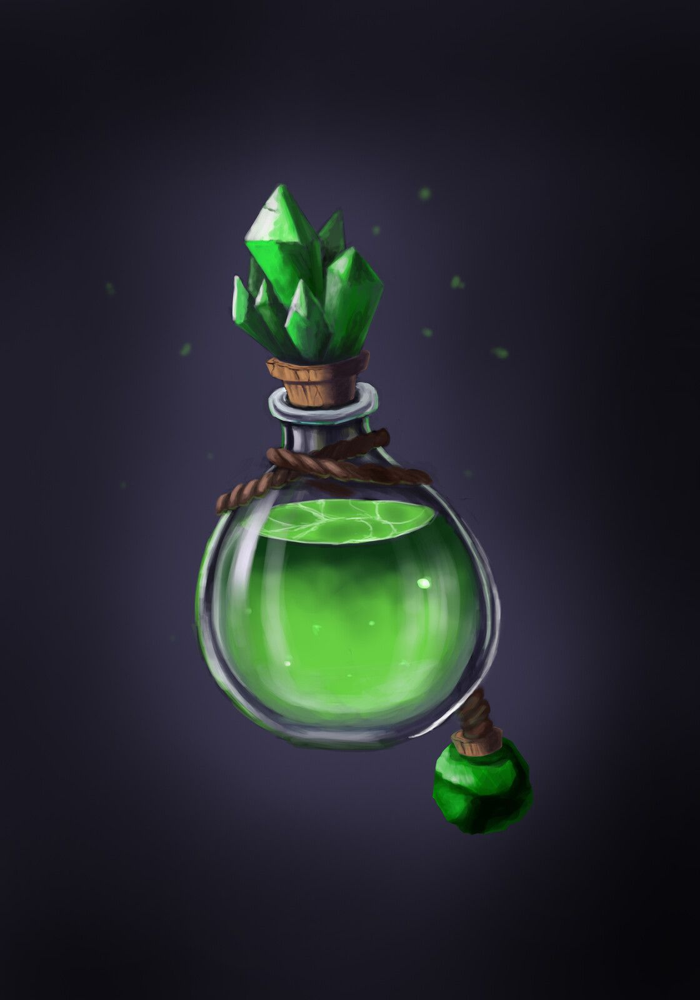
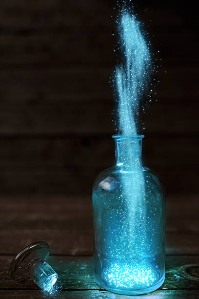
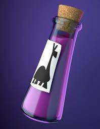

Welcome Weary Travelers!
To the One-Stop Potion Shop! With our access to this futuristic device called "the internet", we are working to bring the world of magic to you. So stay a spell, and take a look at the links below to check out our generous offers!
Contact Information
We have many different kind of potions here, but they are divided into four categories. We have our healing potions, our emotion and sleep potions (primary ingredient is Nyquill), our ability enhancer potions, and our wretched potions. If you want to know more about our wretched potions, a visit must be payed in person to discuss specific ingredients and prices.
  All content copyright © 2022, created by Megan S. ™ Created By Megan